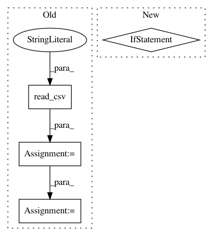

a09d1f3c4b979972c6594133c21b2783c9234482,mltsp/featurize.py,,load_and_store_feature_data,#Any#Any#Any#Any#,61
Before Change
def load_and_store_feature_data(features_path, featureset_id="unknown",
in_docker_container=False, first_N=None):
features = pd.read_csv(features_path, comment="//", skipinitialspace=True)
if first_N:
features = features[:first_N]
write_features_to_disk(features, featureset_id, in_docker_container)
if not in_docker_container:
os.remove(features_path)
return "Featurization of timeseries data complete."
After Change
targets, metadata = ft.parse_headerfile(features_path)
if first_N:
metadata = metadata[:first_N]
if targets is not None:
targets = targets[:first_N]
featureset = ft.assemble_featureset([], targets, metadata)
write_features_to_disk(featureset, featureset_id, in_docker_container)
// if not in_docker_container:
// os.remove(features_path)
In pattern: SUPERPATTERN
Frequency: 3
Non-data size: 4
Instances
Project Name: cesium-ml/cesium
Commit Name: a09d1f3c4b979972c6594133c21b2783c9234482
Time: 2015-11-10
Author: brettnaul@gmail.com
File Name: mltsp/featurize.py
Class Name:
Method Name: load_and_store_feature_data
Project Name: DistrictDataLabs/yellowbrick
Commit Name: 4d0483edd1468855df714f77bca1a0a93f01cbce
Time: 2018-06-18
Author: benjamin@bengfort.com
File Name: docs/api/features/pca.py
Class Name:
Method Name:
Project Name: Kaggle/docker-python
Commit Name: 2297d480f2a00b14f39473bf0f2d2672978554df
Time: 2020-09-14
Author: rosbo@google.com
File Name: tests/test_fastai.py
Class Name: TestFastAI
Method Name: test_tabular